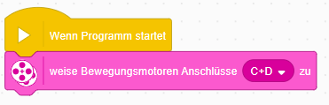
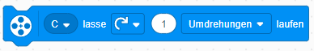
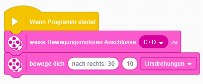
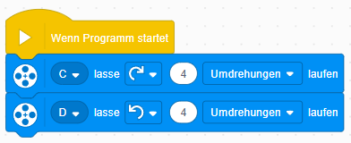

Damit du die rosanen Bewegungsblöcke nutzen kannst, musst du zuerst definieren wo die Motoren angeschlossen sind
Um Kurven zu fahren, nutzen wir am besten die blauen Motorenblöcke
Aufgabe 1: Erstelle ein Programm, um einen Legoroboter einen Kreis fahren zu lassen (Durchmesser ca. 20cm) Aufgabe 2: Erstelle ein Programm, bei dem der Roboter sich auf der Stelle im Kreis dreht
Lösung 1 Lösung 2 